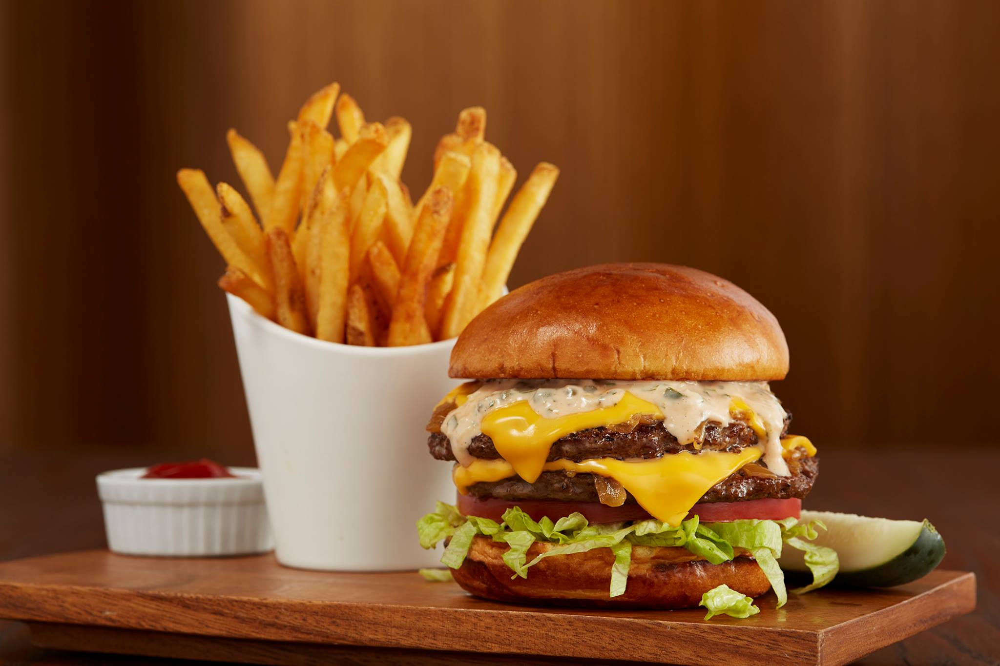

All Around FlavorTown
Next Page
Taste buds is a story of our modest adventure.
Places I have visited
Coopers Hawk Winery
Tupelo Honey
Kobe Japanese Steakhouse
Cheddars
City Taphouse in Pen Quarter
Mason's Famous Lobster Rolls
Jack Browns Burger Joint
EL Rodeo Mexican Resturant
Cooper Hawks Winery

Cooper's Hawk Winery & Resturants is a local favorite I enjoy visiting for the legendary Leonard Burger.Crafted from the most delicious cuts of beef, this burger is a double patty American classic. Paired with fries you can't go wrong. What about your wine parings? I'm glad you asked!!! I dare not visit a winery and not indulge in adult beverages. By no means am I a wine consonnoissuur however, I dabble in a sip sip horray every now and again. The day's selection was a flight consisting of a Sweet Red, Mosocto, Rhubarb, and Blueberry each feeling like juice with a life of experience.
Tupelo Honey
After my FIFTH time at tupelo honey I could find no flaws.Tupelo honey gives you the apperance of upscale dining but what you recieve is southern comfort. I enjoy there Mac-N-Cheese Waffles with Asheville Hot fried chicken but with the non spicy options for chicken. For my drink I order ofcourse a sweet peach tea that reminds me of my home state Georgia.
Kobe Japanese Steakhouse
Down in central florida there is the city call Orlando one of the homes to a teppanyaki sytle resturant called Kobe Japanese Steakhouse
Cheddars
City Taphouse in Pen Quarter
Mason's Famous Lobster Rolls